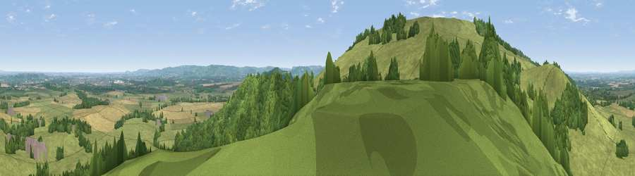

Viewpoint near Ashton Under Hill
#6829 in England · top 16% of its area beats it · near Ashton Under Hill · path 197 mWhere it is
The exact computed spot (SO 98925 39325). Click the marker for map links.
Public access: the nearest public right of way is about 197 m away — the final stretch may cross private land. Computed from Natural England's CRoW access layer and OpenStreetMap rights of way — not the legal definitive map. Always verify locally.
The view, rendered

A 360° render of this exact spot computed from the terrain model, tree cover and land cover — summer colours, afternoon light, calibrated against photographs of famous viewpoints. Real trees, hedges and buildings will differ in detail.
The panorama
Grey silhouette: terrain skyline in each direction (720 bearings, Earth curvature and refraction included). Dashed green: skyline with trees (+15 m) and buildings (+8 m) as obstacles. Blue strip: how far the ground is visible on each bearing.
Where the view opens
Wedge length = distance to the farthest visible ground on that bearing (vegetation-aware). Rings at 10, 25 and 50 km.
What fills the view
59% grassland · 26% woodland · 14% cropland · 1% built-up
Angular shares of the visible panorama (visual magnitude), not map area. Landscape diversity 0.43 (0–1 Shannon).
Key numbers
More beautiful places nearby
The staircase of upgrades: each row has a higher view potential than everything closer. Driving times are estimates from straight-line distance, calibrated against real road routing — check an actual route before setting out.
| Place | Direction | Drive | Score |
|---|---|---|---|
| Viewpoint near Ashton Under Hill | SE · 1 km | ~2 min | 72.8 |
| Viewpoint near Elmley Castle | W · 1 km | ~4 min | 80.5 |
| Bredon Hill | WNW · 3 km | ~8 min | 83.0 |
| Black Hill | W · 22 km | ~37 min | 83.1 |
| Pinnacle Hill | W · 22 km | ~37 min | 85.7 |
| Worcestershire Beacon | WNW · 23 km | ~38 min | 87.1 |
| Viewpoint near West Quantoxhead | SW · 130 km | ~154 min | 87.9 |
| Viewpoint near West Quantoxhead | SW · 130 km | ~154 min | 88.7 |
52.05231, -2.01709 · source: screening · position refined by local search. Computed location — check access rights before visiting.